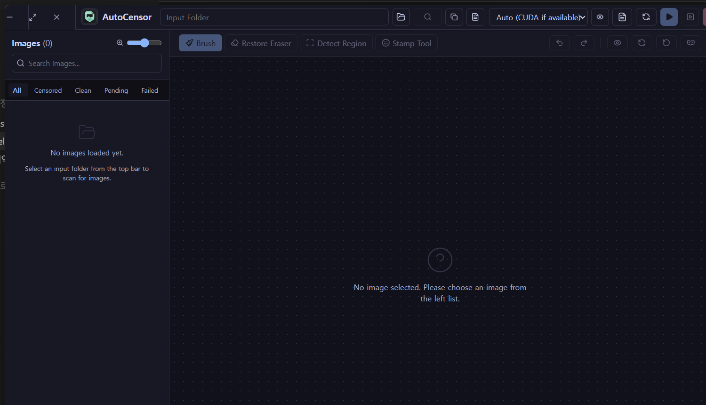

Let the folder run.
Fix only what matters.
AutoCensoR scans an image folder, detects regions that need protection, and gives you fast manual correction tools for the final pass.
For commercial use, paid redistribution, or product bundling, please contact by email.

Workflow
From empty workspace to corrected output
Select a step and the screen, caption, and key points change together.
Note: the example image inside each screenshot is a test image, not a real photo.
Protection styles
Same region, different output
Solid fill, grayscale, blur, and mosaic change the visual treatment, not the detected region itself.
Detection sensitivity
Lower thresholds catch more candidates
A lower value such as 0.01 is more sensitive and keeps wider candidate regions. A higher value keeps only more confident candidates.
Before and after
Compare original and protected output
Left is original, right is protected. Drag the divider or use arrow keys.
Questions and Q&A
For questions, bug reports, and improvement requests, use the Tistory comments. Do not post private paths, account details, or sensitive images in public comments.